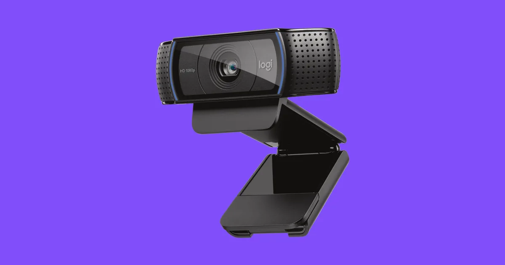

|  | A webcam is a video camera that feeds or streams an image or video in real time to or through a computer network, such as the Internet. Webcams are typically small cameras that sit on a desk, attach to a user's monitor, or are built into the hardware. Webcams can be used during a video chat session involving two or more people, with conversations that include live audio and video. Webcam software enables users to record a video or stream the video on the Internet. As video streaming over the Internet requires much bandwidth, such streams usually use compressed formats. The maximum resolution of a webcam is also lower than most handheld video cameras, as higher resolutions would be reduced during transmission. The lower resolution enables webcams to be relatively inexpensive compared to most video cameras, but the effect is adequate for video chat sessions. |
The term "webcam" (a clipped compound) may also be used in its original sense of a video camera connected to the Web continuously for an indefinite time, rather than for a particular session, generally supplying a view for anyone who visits its web page over the Internet. Some of them, for example, those used as online traffic cameras, are expensive, rugged professional video cameras. |
|